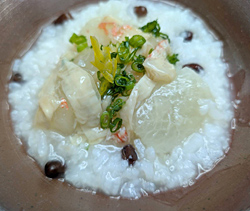

大根の湯葉あん入り小豆粥
- 調理時間：90分
- （一人当たり）
- カロリー：383kcal
- たんぱく質：19.5g
- 脂質：4.0g
- 炭水化物：61.6g
- 塩分：2.4g


＜2人分＞
- 米
- 1/2カップ
- 小豆
- 大さじ2
- 塩
- 小さじ1/3
- 水
- 5カップ
小豆粥
- 大根
- 10㎝位(200g)
- 湯葉（ぬるま湯でもどす）
- 適量
- カニのむき身
（カニ缶でもよい） - 100g
- だし汁
- 2カップ
- 料理酒
- 大さじ2
- しょうゆ
- 大さじ1/2
- みりん
- 小さじ1
- 塩
- 少々
- 水溶き片栗粉
- 片栗粉大さじ1～2
水大さじ1～2 - 青ネギ
- 少々
湯葉あん


- 小豆はさっと洗い、たっぷりの水（分量外）で煮る。
沸騰したら弱火にして20～30分煮る。 - 米を洗い、ザルにあげ水切りする。
鍋に水5カップと米をいれて強火で炊く。
沸いてきたら弱火にして、吹きこぼれないように蓋をずらして、60分煮る。
最後に茹でた小豆を加え、塩で味をととのえる。 - <湯葉あんをつくる>
大根は皮をむき、イチョウ切りに切り、水からゆで、やわらかくなるまで下茹でする。 - 別の鍋にだし汁、料理酒、しょうゆ、みりんを合わせ、下茹でした大根を加えて弱火で10分ほど煮る。
カニのむき身（カニ缶なら汁ごと）ともどした湯葉を加えてさらに煮る。 - 塩で味をととのえ、水溶き片栗粉を加えて、トロミを出す。
- 小豆粥を器に盛り、湯葉あんをかける。小口に切った青ネギを散らして完成。
大根の湯葉あん入り小豆粥
元日を大正月と呼ぶのに対し、１月１５日は、小正月と呼ばれ、豊作祈願や無病息災を願う伝統行事が各地で行われます。習わしのひとつに、１５日の朝「小豆粥」を食べるのですが、これは古くから赤色の小豆に魔除けの力があると信じられてきたからです。
寒い日はやわらかく炊いたおかゆで身体を芯から温めましょう。様々な具をチョイスしても楽しめます。